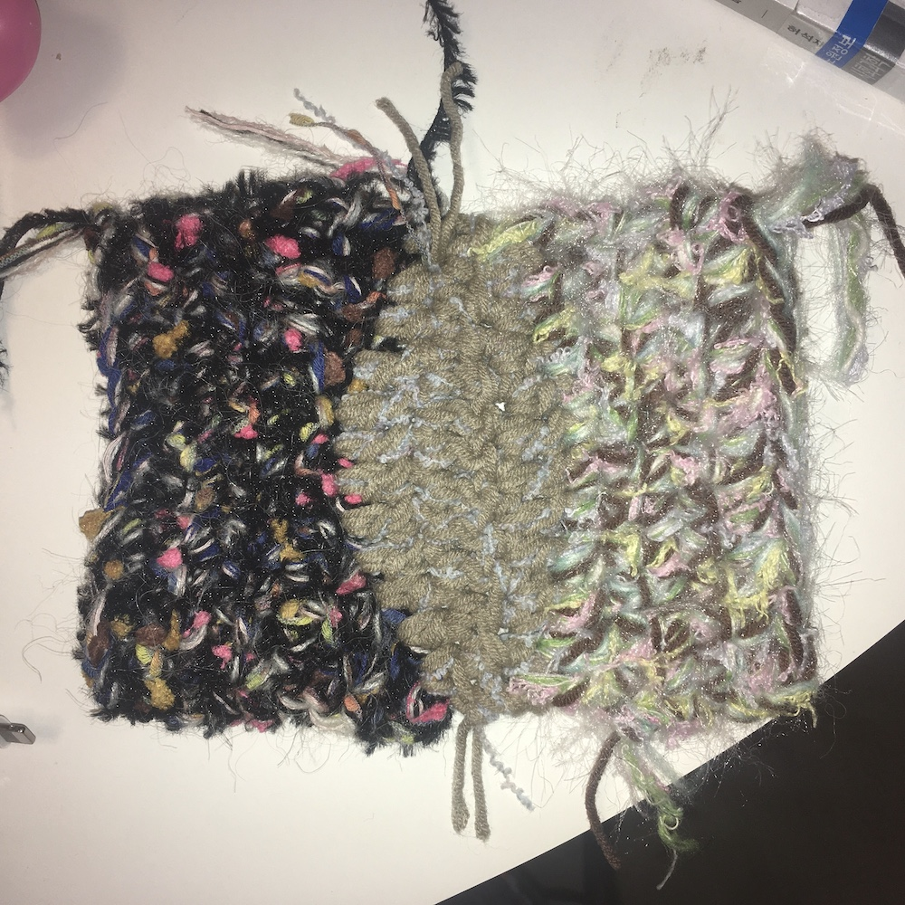

동네에 만화방이 있던 어린 시절.. 그때 본 만화 중에 가장 기억에 남는 것을 하나 꼽자면.. Q.E.D. 라는 추리만화의 한 에피소드다.. 그 에피소드는 살면서 자주 생각이 난다.. 무슨 에피소드냐 하면.. 혼자 사는 사람이 방에서 죽은 채로 발견되는데 죽음의 원인을 밝혀내기 위해 방을 조사해보니 한 사람의 집 같지 않게 뒤죽박죽이고.. 주위 사람들의 증언도 한 사람에 대한 이야기라고는 생각되지 않을 정도로 모순된다.. 추리만화 답게 탐정 역할을 하는 인물과 그 옆에 조수 역할을 하는 인물이 주인공인데 조수 역할을 하는 인물은 패닉에 빠진다 추리만화 답게.. 어떤 모습이 진짜 그 사람의 모습인지.. 주위 사람들 중 누군가 거짓말을 하는 건 아닌지.. 왜 죽었는지.. 하지만 역시나 추리만화 답게 탐정 역할을 하는 인물은 이미 답을 알고 있는데.. 참고로 이 만화는 사건의 전말을 파헤치기 전에 꼭 멋진 Q.E.D. 컷이 등장한다.. 하여간 답은 모순되는 그 모든 것이 그 사람의 모습이 맞고 뒤죽박죽인 방도 그 자체로 그 사람의 삶이 맞고 혼자 사는 작은 집 안에 들여놓을 수 있는 여러 개의 삶이 너무도 꽉껴서 너무꽉낀 나머지 그 무엇도 그의 삶이 되지 못해서 가능한 모든 문을 닫고 말았다더라.. 나는 살면서 이 에피소드를 자주 떠올린다.. 교집합을 만들어 놓지 않으려는 사람 하나로 묶는 큰 삶의 집합이 있는 줄 알았는데? 없었다더라.. 폐쇄된 동그라미 삶을 폴짝폴짝 건너다니고 여집합의 삶에 홀로 서있고 동그라미와 여집합을 모두 포함한 더 큰 삶의 집합이 내 삶인 줄로 알았는데 실은 동그라미가 늘어나고 커질수록 여집합의 면적이 줄어들고 어라라 홀로 서있을 곳이 없는데? 경계선에 서있다 못하고.. 어라라 집합의 삶에서 또다른 차원의 삶으로! 퀀텀점프 갈수밖에..
